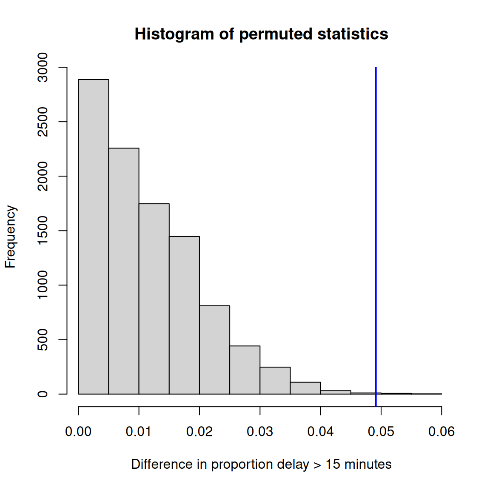
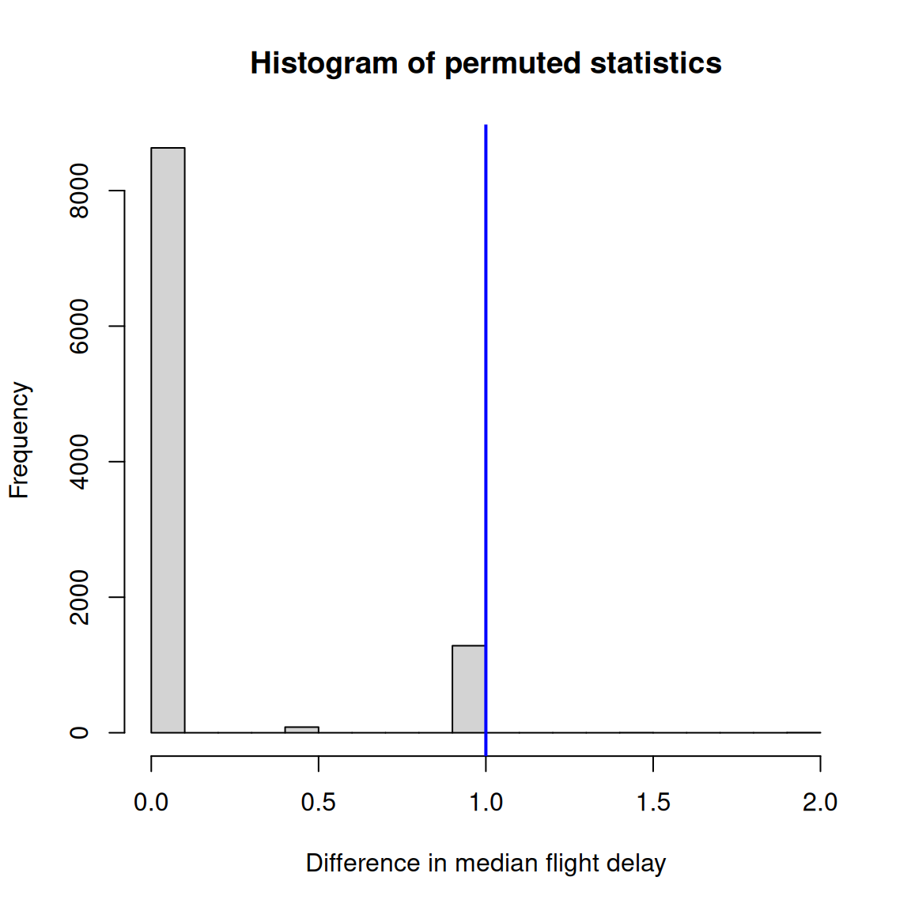

FlightDelay Observed Permutation1 Permutation2 Permutation3
1 5 UA AA UA AA
2 -6 UA UA UA UA
3 -10 AA UA UA UA
4 -3 UA UA AA UA
5 -3 UA UA AA UA
6 0 UA UA UA UAPermutation Tests
Corresponding reading
- Chapter 5.8.1-5.8.3 in Agresti and Kateri (2021)
In Rice (2006) only rank-based permutation tests are discussed, but they are discussed in much greater detail than in Agresti and Kateri (2021):
- Chapter 11.2.3 Mann-Whitney Test
- Chapter 11.3.2 Signed Rank Test
A primary step in constructing a hypothesis test is to determine the null distribution of our test statistic \(T\). We have discussed how to find the null distribution based on theoretically determining the sampling distribution of our test statistic when we either
- assume something about the distribution of our data
- know the asymptotic behavior of our test statistic.
What about a strategy for when we do not want to make assumptions about the distribution of our data?
Permutation tests are a different flavor of test and are non-parametric. They are appropriate when you can develop a null hypothesis that implies a symmetry of the data under permutations of the data.
We will focus on one example, the case of comparing two groups, i.e. where we have data \(X_1,\ldots, X_{n_X}\) and \(Y_1,\ldots,Y_{n_Y}\) from two populations. Previously, we used normality assumptions (or asymptotic normality assumptions) to test whether the means are the same in the two groups. However, suppose I have a small sample size and my data is skewed? These options are not possible. Moreover, if the data is skewed, it’s not clear that comparing the means is the best option (especially since we have seen that the means are not robust to outlying points that we might have in skewed data).
We assume we have a test statistic that measures a difference of importance between the two groups. For example, \[|\text{median}\{X_i\}-\text{median}\{Y_i\}|.\]
More generally, we can just write \[T=g(X_1,\ldots,X_{n_X},Y_1,\ldots,Y_{n_Y}),\] to encompass other possible statistics we are interested in – the permutation tests can be applied to any statistic.
What characterizes a permutation test is how we determine the null distribution of \(T\) under \(H_0\). We haven’t described the null hypothesis. The null hypothesis is that the observations we measure were put in group \(X\) versus group \(Y\) by random chance. We call this the permutation null and it says that any permutation of the data into \(X\) and \(Y\) groups would be just as likely as the one we saw.
Permutation Distribution
This leads to the permutation distribution – we consider all possible \(T_j\) we could have gotten under all permutations of the data. If \(n_X+n_Y=N\), then that is all \(N!\) orderings of the data (for this problem, you could equivalently say all \(N \choose n_X\) ways of choosing \(n_X\) values to put into the \(X\) group).
The distribution of all such \(T_j\) is taken as the null distribution, and our observed \(t_{obs}\) is compared to this distribution.
Example
Consider a random sample of flights out of SF, and I want to know whether one airline (United=UA) has more delays than another airline (American=AA).
Then our permutation null imagines that the airline assignment was completely random and separate from the flight delays – a bunch of blank airplanes on the runway that we at the last minute assign to an airline, with crew and passengers (not realistic, but a thought experiment!). If our data actually was from such a scenario, we could actually rerun the random assignment process. How? By randomly reassigning the labels. Since (under the null) we assume that the data we measured had nothing to do with those labels, we could have instead observed another assignment of those airline labels and we would have seen the same data with just different permutations of the labels on the planes.
Below are the results of three different possible permutations, created by assigning planes (rows/observations) to an airline randomly – only the first six observations are shown, but all of the original observations get an assignment. Notice the number of planes assigned to UA vs AA stays the same, just which plane gets assigned to which airline changes. The column Observed shows the assignment we actually saw (as opposed to the assignments I made up by permuting the assignments).
Here’s the first 6 observations of the data (out of 3,970 observations), and my permuted labels:
For each of these three permutations, I can calculate proportion of flights delayed, among those assigned to UA vs those assigned to AA, and calculate the difference between them
Proportion delayed per Carrier, each permutation: Observed Permutation1 Permutation2 Permutation3
AA 0.1554878 0.2063008 0.1951220 0.1910569
UA 0.2046216 0.1878768 0.1915606 0.1929002Differences in Proportion Delayed per Carrier, each permutation: Observed Permutation1 Permutation2 Permutation3
0.049133762 -0.018424055 -0.003561335 0.001843290 I’ve done this for three permutations, but we could enumerate (i.e. list) all possible such assignments of planes to airlines. If we did this, we would have the complete set of potential flight delay datasets possible under the null hypothesis, and for each one we could calculate the difference in the proportion of delayed flights between the airlines.
More formally
Specifically, let \(T_j\) be our test statistic evaluated after permuting all of our combined data. Then the null distribution of \(T\) is a discrete distribution, giving probability \(1/N!\) to each \(T_j\), with cdf \[G(t)=P_{H_0}(T\leq t)=\frac{1}{N!}\sum_{j=1}^{N!}I(T_j\leq t),\] (note the similarity to our empirical cdf and bootstrap distribution)
If we assume that our statistic \(T\) is such that large values are unexpected under the null, then we reject when \(T>c_{\alpha}\), where \(c_\alpha\) should be the \(1-\alpha\) quantile of the null distribution \(G\), \[c_\alpha: 1-G(c_\alpha)=P(T_j>c_\alpha)= \frac{1}{N!}\sum_{j=1}^{N!}I(T_j>c_\alpha)\] The p-value of our observed statistic \(t_{obs}\) is the probability, under this null distribution, of a value at least as large as \(t_{obs}\), \[\text{p-value}=P_{H_0}(T_j\geq t_{obs})=\frac{1}{N!}\sum_{j=1}^{N!}I(T_j\geq t_{obs}).\]
Note
Notice that because of discreteness issues, the p-value is not \(1-G(t_{obs})=P(T_j>t_{obs})\) because for a p-value, we need to include \(t_{obs}\). For large \(n\) this will not make much of a difference, but since permutation tests can be used for small sample sizes, this distinction can be important.
Computationally Estimating the Permutation Null Distribution
This is the principle of the permutation test, but I’m not about to do that in practice, because it’s not computationally feasible!
Consider if we had only, say, 14 observations with two groups of 7 each, how many permutations do we have? This is 14 “choose” 7, which gives 3,432 permutations.
So for even such a small dataset of 14 observations, we’d have to enumerate almost 3500 permutations. In the airline data, we have 984, and 2986 observations respectively for each airline. We can’t even calculate exactly how many permutations that is, much less actually enumerate them all.
So what can we do? Instead, we consider that there exists such a null distribution and while we can’t calculate it perfectly, we are going to just approximate that null distribution.
How? Well, this is a problem we’ve actually seen. If we want to estimate a true distribution of values, we don’t usually have a census at our disposal – i.e. all values. Instead we draw an i.i.d. sample from the population, and with that sample we can estimate that distribution.
What does this look like here? We know how to create a single random permutation – it’s what I did above using the function sample. If we repeat this over and over and create a lot of random permutations, we are creating an i.i.d. sample from our population. Specifically, each possible permutation is an element of our sample space, and we are randomly drawing a permutation. We’ll do this many times (i.e. many calls to the function sample), and this will create an i.i.d. sample of permutations. Once we have an i.i.d. sample of permutations, we can calculate the test statistic for each permutation, and get an estimate of the true null distribution. Unlike i.i.d. samples of actual population data, we can make the size of our sample as large as our computer can handle to improve our estimate (like the bootstrap).
Specifically, you create \(B\) random permutations of your data; this means \(B\) assignments of your data into groups \(X\) and \(Y\). Each one of these will create a different \(T_j\), so you will have a random sample of \(T_1,\ldots,T_B\) values from all possible \(T_j\).
Then we’ll approximate \(G(t)\), \[G(t) \approx \frac{1}{B}\sum_{b=1}^{B}I(T_b\leq t)\] and likewise approximate the p-value, \[\text{p-value}\approx\frac{1}{B}\sum_{b=1}^{B}I(T_b\geq t_{obs}).\] Like the bootstrap, \(B\) is a quantity you control, so if \(B\) is very large, this approximation will be better and better (unlike a statistical estimator of an unknown quantity where the accuracy of the estimator depends on \(n\) which you do not generally get to make arbitrarily large).
In Summary
- Pick a test statistic \(T\) (for example, the difference of means/medians; or the t-statistic) and compute its value on the original sample: call this \(t_{obs}\).
- Combine the samples, so we have a combined sample of size \(n_X+n_Y\)
- Draw a sample of size \(n_X\) from this combined sample without replacement – this creates a random permutation of your data.
- Compute the value of the test statistic that you chose on these new samples that you obtained by resampling the original sample. Call this \(T^*_1\).
- Repeat steps 3, 4 many times, say \(B\) times, where \(B\) might be 5,000, thus building a null distribution of the test statistic \(T^*\), under \(H_0\), that is, assuming the null hypothesis that there is no difference between the underlying distributions of the two samples.
- Compute the \(p\)-value as the proportion of times \(T^*\) is more extreme than or equal to \(t_{obs}\).
- For decision testing: reject \(H_0\) if \(t_{obs}\) is too extreme relative to this null distribution, that is, if the \(p\)-value is less than your significance level \(\alpha\).
The great thing about the permutation test is that we can build a null distribution for any statistic of our choice. So we usually will try to use a statistic that has a higher power.
Example
We will demonstrate this procedure on the flight data, using the difference in the proportions later than 15 minutes as our statistic.
The summary statistics on our actual data:
AA UA
0.1554878 0.2046216 I am going to choose as my statistic the absolute difference between the proportion later than 15 minutes. This will mean that large values are always considered extreme for my p-value computations.
[1] 0.04913376Here is the histogram of the values of the statistics under all of my permutations.

If my data came from the null, then this is the (estimate) of the actual distribution of what the test-statistic would be.
To get a p-value, I will calculate the proportion of these \(T_j\) that are greater than or equal to my observed value.
pvalue= 0.0011
Note
Notice that I defined my test statistic to include the absolute value of my differences. So I only have to worry about large values of \(T\) and not the two tails separately.
Exercise 1
- So what conclusions would you draw from this permutation test?
- What impact does this test have? What conclusions would you be likely to make going forward?
- Why do I take the absolute difference? What difference does it make if you change the code to be only the difference?
Median difference
What about if I look at the difference in median flight delay between the two airlines? Let’s first look at what is the median flight delay for each airline:
AA UA
-2 -1 The first thing we might note is that there is a very small difference between the two airlines (1 minute). So even if we find something significant, who really cares? That is not going to change any opinions about which airline I fly. Statistical significance is not everything.
However, I can still run a permutation test (you can always run tests, even if it’s not sensible!). I can reuse my previous function, but just quickly change the statistic I consider – now use the absolute difference in the median instead of proportion more than 15min late.
Here is the histogram I get after doing this:

This gives us a p-value:
pvalue (median difference)= 0.1287Exercise 2
- What is going on with our histogram? Why does it look so different from our usual histograms?
- What would have happened if we had defined our p-value as the probability of being greater rather than greater than or equal to? Where in the code of
permutation.testwas this done, and what happens if you change the code for this example?
Other settings
The use of permutation null is a very powerful idea as it relies on very few assumptions and is valid even for small sample sizes. However, you do have to figure out where and how a permutation null would make sense – it has to match the setup of the data.
Paired Data
Consider our two group setting, but with paired data instead. We cannot have a null that assumes we can arbitrarily mix up all of the group labels. That would ignore the dependency between the paired observations.
But we can consider our null to be that within each pair, the group labels are independent of the outcome. For example, that the outcome before and after would have been the same regardless; or that the response between the older and younger generation would have been the same even if they had been in the opposite generation.
Then this implies within each pair we can arbitrarily permute the \(X\) and \(Y\) labels to get our null distribution of our test statistic.
The rank-based version of the permutation test is called the signed-rank test.
Note
This randomization of the data can be viewed as a constrained permutation – of all possible permutations of the \(X\) and \(Y\) labels, we constrain ourselves to permutations of the data that satisfy this requirement.
Simple Regression
Our simple regression setting says that the expected value of \(Y\) depends on its \(X\). We could have a null hypothesis that it does not – i.e. we would have seen the same \(Y\) values if they had been paired with different \(X\) values. So a permutation null hypothesis for this data might be that any \(Y\) and \(X\) could have been paired together and I would have seen the same \(Y\) outcome.
This leads to a permutation test where I permute the pairing of \(Y\) with \(X\).
Note
Notice how this is the opposite of the logic of the paired data. There I wanted to keep the dependency between pairs, while here I am breaking the dependency between the pairs. This is because I am interested in testing different things. In regression, I am testing whether there is a dependency; by breaking it I can see how strong the dependency in my observed data is compared to data without that dependency. In my paired group comparison, however, I want to test whether the observed values depend on which group (\(X\) or \(Y\)) they are assigned to. My permutation in paired data is breaking a dependency, but not the dependency between pairs, but rather the dependency on the group assignment. (The use of \(X\) and \(Y\) in both problems is a red herring).
While there are a few other examples where you can use permutation ideas, it has to be appropriate for the setting, so the situations where we can use permutations tests is more limited. Regardless, it remains a powerful tool for some very common settings. Furthermore, the conceptual framework of the permutation null hypothesis is a fundamental idea for areas like causal inference.
What is the null hypothesis for permutation tests?
I wrote the null hypothesis as “the observations we measure were put in group \(X\) versus group \(Y\) by random chance.” This is a mechanistic description of how the data was generated, rather than testing something specific.
You can often see this null hypothesis described as the distribution of group \(X\) is equal to group \(Y\),
\[ H_0: F_X = F_Y \qquad \text{vs} \qquad H_a: F_X \neq F_Y \] Setup: \(X_1, \ldots, X_{n_X} \overset{\text{IID}}{\sim} F_X\) and \(Y_1, \ldots, Y_{n_Y} \overset{\text{IID}}{\sim} F_Y\), where \(F_X\) and \(F_Y\) are unknown.
- Under \(H_0\), \(F_X = F_Y\), so the combined sample \(X_1, \ldots, X_{n_X}, Y_1, \ldots, Y_{n_Y}\) is also iid from \(F_X\).
- Any shuffle of the combined sample (e.g. \(X_5, X_3, Y_2, Y_{12}, \ldots\)) is also iid from \(F_X\) under \(H_0\).
- Under \(H_0\): the actual sample is indistinguishable from a permuted sample, but under \(H_a\): permuted samples will have a different distribution.
The null hypothesis implies that the group labels of \(X\) and \(Y\) are arbitrary.
This is what the mechanistic description of the permutation null hypothesis assumes – there’s nothing systematically different between the two groups.
However, I find just writing down this description of the null hypothesis can be confusing on its own, because this leaves the implication that the test we run will be explicitly testing whether the distributions are the same in all ways.
But in fact, what differences in the distribution we are likely to detect will be highly influenced by the test statistic we choose. If I choose \[T=|\text{median}\{X_i\}-\text{median}\{Y_i\}|\] versus choosing \[T=\left|\log\frac{S_X^2}{S_Y^2}\right|\] then I will be more likely to detect certain types of deviations in their distribution than others. The choice of test statistic will concentrate the attention of the test in certain ways.
When we think about it like this, we see that this is really a power discussion. Which alternatives I have high power against will depend on my test statistic. When you have null hypotheses which have broad sets of alternatives (here the alternative space is “all possible ways to have two different distributions”!), then there can often be many possible reasonable test statistics depending on a researcher’s priority.
I personally find it easiest to think of the mechanistic null – that each permutation of the data between these groups was an equally likely outcome – and what it implies about the variable measured and its relationship to the grouping variable.
Note
Sometimes you will see written that if the test statistic is \[T=|\text{median}\{X_i\}-\text{median}\{Y_i\}|\] then you are testing \(H_0: \text{median}(F_X)=\text{median}(F_Y)\), i.e. the difference in the medians of the true distributions. This is problematic in its own way, because even if the medians of the distributions are the same, but the distributions differ in other ways, the permutation test might reject the null at rates higher than your level \(\alpha\). You can, of course, assume that’s the only difference, so that a rejection is only a rejection due to difference in medians, but the beauty of the permutation test is its lack of assumptions.
In general, it can be tricky to make a conclusion about a parameter in a parameterized model via permutation tests. You run the risk that the parameterized null hypothesis that you write down doesn’t actually match the permutation null hypothesis.
Assumptions of Permutation Test
Unlike pretty much every other procedure, this procedure does not rely on either distributional assumptions or large sample sizes. It is (practically) assumption free. The one main assumption of permutation tests is that our data are independently sampled (and thus i.i.d. under the null).1
What we do need to be careful about is that the method considers the specific data values as fixed and the randomness comes from the assignment process. In other words, the null distribution assumes that these particular observations have an inherent value, and the randomness comes from assigning the observations into groups \(X\) and \(Y\).
This is quite a different conceptual framework from what we’ve assumed before (as you can see in our struggles about defining the null hypothesis). This also means that it’s really a test conditional on the specific units we are measuring – our abstract idea of probability is “what would these units have yielded if we had changed their treatment?”; the null hypothesis assumes the answer is “exactly the same”.2
However, this means that there is still an important issue of generalizing this result to a larger population – if these observations were not drawn from a larger population in a representative way, the generalizability of these results cannot be guaranteed.
Does it mean that your data has to be generated by random assignment into groups for this test to be valid? No, it does not. A randomized assignment guarantees that this test is valid, by design.
Rank Tests
Permutation tests have been around longer than there have been personal computers. How is this possible? Historically, permutation tests were limited to test statistics \(T\) that only used the ranks of the data. In other words, rather than using the values of the data, we would only use their combined ranks, \[X_1,\ldots,X_{n_X},Y_1,\ldots,Y_{n_Y} \rightarrow R_1,\ldots,R_{n_X+n_Y}\] where \(R_i \in \{1,\ldots,n_X+n_Y\}\) is the rank of \(X_i\) or \(Y_i\) in the combined set of data.
This creates a simplification, in that the transformed data \(R_i\) must always lie in \(\{1,\ldots,n_X+n_Y\}\) for all datasets, so that analytical approximations to \(G\) can be determined (without seeing the data) and used universally. Such rank tests are often equated with permutation tests, but this is really a hold-over from when rank statistics were the only possible such statistics because you could analytically derive the permutation null distribution. These rank tests are really just an example of a permutation test.
However, rank-based permutation tests are still highly relevant because using ranks can make the test less sensitive to outliers. This ties in with robustness.
We will go through two well-known examples.
Two Group Comparisons: Wilcoxon Rank-Sum Test/Mann-Whitney Test
The Wilcoxon test or Mann-Whitney Test is the name of the rank-based permutation test applied to comparing two groups. It uses a specific test statistic \(T\) (based on the sum of the ranks in each group) and the permutation null distribution.
Because of its choice of test statistic (i.e. based on the rank), the test can be described as: are the distributions the same, or does one population tend to yield larger values?3 The basic idea is that if \(X_i\) and \(Y_j\) have the same distribution, then \[ P(X_i < Y_j) = \frac{1}{2} \] for any \(X_i\) and \(Y_j\). This means that if the null is true, then the \(X_i\)’s should be scattered randomly among the \(Y_j\)’s, and the sum of their ranks should not be too small or too large.
Basic idea of the Procedure:
- Combine both samples and rank them in order of increasing size.
- Compute the sum of ranks belonging to each group, \(W_X\) and \(W_Y\)
- We pick the smaller of these. If this rank sum is too small, it suggests the populations differ.
Note
Notice that our test statistic – the smaller of \(W_X\) and \(W_Y\) – means that really small values are unlikely under the null. This is another example of where the standard test-statistic doesn’t follow the convention that larger = less likely under the null.
By picking the minimum, I am making my alternative “two-sided”, i.e. I do not assume that differences only go in one direction or the other.
Example 1 (Survival times (years) after a coronary attack) A physician believes that a certain treatment can prolong the life of people who have suffered a coronary attack. He does an experiment on 10 patients, randomly assigning 5 to the treatment group and 5 to the control (no treatment), and makes sure to control for other factors such as age and general health. 5 years later, 4 out of 5 patients from the treatment group are still alive, and only 2 of the control group. Below are the survival times in years of all the ten patients:
| Group | |||||
|---|---|---|---|---|---|
| Treatment | 4.2 | 6.5 | 7.9 | 13.2 | 17.8 |
| Control | 0.4 | 1.2 | 2.9 | 5.6 | 6.7 |
Combined and ordered:
\[ \underbrace{0.4}_{1},\ \underbrace{1.2}_{2},\ \underbrace{2.9}_{3},\ \underbrace{4.2}_{4},\ \underbrace{5.6}_{5},\ \underbrace{6.5}_{6},\ \underbrace{6.7}_{7},\ \underbrace{7.9}_{8},\ \underbrace{13.2}_{9},\ \underbrace{17.8}_{10} \]
\[ \underbrace{C \quad C \quad C \quad T \quad C \quad T \quad C \quad T \quad T \quad T}_{\text{group labels}} \]
\[ W_T = \text{rank sum of treatment} = 4 + 6 + 8 + 9 + 10 = 37 \]
\[ W_C = \text{rank sum of control} = 1 + 2 + 3 + 5 + 7 = 18 \]
Note: \(W_T + W_C = \frac{10 \cdot 11}{2} = 55\) ✓
Computing a p-value
We can use the same permutation test strategy as above – generate all permutations (or a random sample of \(B\) of them), and count how many \(W_j\) are less than or equal to our observed value. But unlike general permutation tests, because we are working on ranks, we can figure this out directly.
Consider our example, where our smallest is \(W_C=18\). We want to calculate a p-value. There are \(\binom{10}{5} = 252\) equally likely rank assignments. But unlike general permutations, we know without seeing the data that we will see ranks \(1-10\), and thus which possible permutations will create subsets where the first 5 have a sum \(\leq 18\):
\[ 1+2+3+4+5 = 15 \]
\[ 1+2+3+4+6 = 16 \]
\[ 1+2+3+4+7 = 17 \]
\[ 1+2+3+5+6 = 17 \]
\[ 1+2+3+4+8 = 18 \]
\[ 1+2+3+5+7 = 18 \]
\[ 1+2+4+5+6 = 18 \]
We also need to consider that we are taking the minimum of the two groups, so we also need to count all the ways that the smallest ranks could be in the last five (i.e. in the treatment group). Since the groups are the same size, this will be just the same number of permutations. This gives us
\[ P(\min(W_C,W_T) \leq 18) = 2\times \frac{7}{252} \approx 0.056 \]
Conclusion: Our p-value is \(0.056\). Usual measure of significance are for \(\alpha=0.01\) or \(\alpha=0.05\), so while not very likely, it is only a marginal result. There is not strong evidence that the treatment appears to have an effect on survival.
Note
Notice that if we hadn’t taken the minimum, the p-value would have been 0.028 and would be more significant. If we had chosen a one-sided alternative hypothesis, then only small values of \(W_C\) would count as evidence against the null, not large values of \(W_C\).
The statement said that “a physician believes that a certain treatment can prolong the life of people who have suffered a coronary attack” so some people might think this justifies a one-sided test. However, this is a slippery slope. Everyone goes into their study believing that their intervention will make things better; that doesn’t mean it’s not possible that it will make things worse! If you set yourself up to only detect if it’s a positive effect, then you will miss a possible negative effect – which could be quite problematic.
Moreover, practically, one-sided tests make it easier to get significance, as we’ve seen above. This makes them “attractive” for researchers who want to find significant p-values. But that doesn’t make it the right choice, and it certainly is not the conservative choice.
While both books seem to love to present one-sided hypothesis tests (their properties are mathematically simpler to analyze), I steer clear of them in practice.
Formal Setup
Given independent samples \(X_1, \ldots, X_{n_X} \sim F_X\) and \(Y_1, \ldots, Y_{n_Y} \sim F_Y\), let \(Z = (X, Y)\) be the combined sample.
\[ R_i(Z) = \text{rank of } X_i \text{ in } Z, \quad 1 \leq i \leq n_X \]
\[ R_{n_X+j}(Z) = \text{rank of } Y_j \text{ in } Z, \quad 1 \leq j \leq n_Y \]
\[ R(X) + R(Y) = \frac{(n_X+n_Y)(n_X+n_Y+1)}{2} \]
Under \(H_0\):
\[ P(X < Y) = \frac{1}{2} \]
- Every assignment of \(n_X + n_Y\) ranks is equally likely (there are \((n_X+n_Y)!\) assignments).
- There are \(\binom{n_X+n_Y}{n_X}\) distinct rank assignments to \(X\).
- Multiple different (equivalent) choices of test statistics can be used (that’s why there are two names for this test.) Generally, for two-sided tests, the easiest is to define the test statistic as the minimum of not the \(W_X\) and \(W_Y\) but of \[\begin{gathered} U_X=W_X-\frac{n_X(n_X+1)}{2}\\ U_Y=W_Y-\frac{n_Y(n_Y+1)}{2} \end{gathered}\] where \(n_X(n_X+1)/2\) is the smallest value for \(W_X\), i.e. if all the first \(n_X\) ranks were in the \(X\) group (and equivalently for \(Y\)). This makes the calculations we did before work even when there are different sized groups.4
The null distribution of the test statistic is (in principle) found by enumerating all \(\binom{n_X+n_Y}{n_X}\) permutations. For larger sample sizes, we can get a normal approximation to the distribution of the test statistics. For this reason, rank tests could be used before there were computers to computationally resample from all possible permutations. Now that we have computers, we can determine the distribution using resampling, as we would in any permutation test.
Paired Groups: Wilcoxon Signed-Rank Test
Sunburn Example
Seven volunteers test suntan lotions with and without a new ingredient. Each volunteer applies the old lotion to one side of their spine and the new lotion to the other (side chosen randomly), then exposes their back to the sun.
| Volunteer | 1 | 2 | 3 | 4 | 5 | 6 | 7 |
|---|---|---|---|---|---|---|---|
| \(X_i\): Degree of sunburn (old lotion) | 42 | 51 | 31 | 61 | 44 | 55 | 48 |
| \(Y_i\): Degree of sunburn (new lotion) | 38 | 53 | 36 | 52 | 33 | 49 | 36 |
| \(D_i = X_i - Y_i\) | 4 | −2 | −5 | 9 | 11 | 6 | 12 |
| Rank of \(|D_i|\) | 2 | 1 | 3 | 5 | 6 | 4 | 7 |
Under \(H_0\) (the new ingredient has no effect), \(D_i\) and \(-D_i\) have the same distribution, so the \(k\)-th largest difference is equally likely to be positive or negative. Hence all sign assignments to the \(n\) ranks are equally likely.
Hypotheses
The permutation null hypothesis simplifies to:
\[ H_0: \text{All sign assignments to ranks are equally likely} \quad\text{(}D_i\text{'s symmetric about 0)} \]
\[ H_a: \text{The treatment has an effect} \quad\text{(}D_i\text{'s not equally likely to be positive or negative)} \]
Mechanics
- Compute \(D_i = X_i - Y_i\).
- Rank the absolute differences \(|D_i|\); let \(R_i = \text{rank}(|D_i|)\).
- Compute
\[ W_+ = \sum_{i:\, D_i > 0} R_i, \qquad W_- = \sum_{i:\, D_i < 0} R_i. \]
- Use whichever of \(W_+\) or \(W_-\) is smaller as the test statistic.
Sunburn example
\[ W_- = \text{rank-sum of negative differences} = 1 + 3 = 4 \] \[ W_+ = \text{rank-sum of positive differences} = 28 - 4 = 24 \] Notice, ranks 1 through \(n\) always sum to \(\frac{n(n+1)}{2}\):
\[ W_- + W_+ = \frac{7(7+1)}{2} = \frac{56}{2} = 28. \checkmark \]
We use \(W_- = 4\) (the smaller of the two) as our test statistic.
Null Distribution of \(W_-\) (or \(W_+\))
Under the permutation null hypothesis, there are \(2^n\) equally likely sign assignments, giving \(2^n\) equally likely values of \(W_-\).
\[ P(W_- \leq w) = \frac{\#\{W_- \leq w\}}{2^n} \]
Sunburn Example (continued)
With \(n = 7\), there are \(2^7 = 128\) equally likely sign assignments. Again, since we are working with ranks, and not the value of the data, we can say what are the possible permutations that would have a \(W_-\) less than or equal to what we observed, to get \(P(W_- \leq 4)\).
| Value of \(W_-\) | Rank assignments (negative \(D_i\)’s) |
|---|---|
| 0 | \(\emptyset\) — no negative \(D_i\) |
| 1 | \(\{1\}\) — smallest \(D_i < 0\) |
| 2 | \(\{2\}\) — second smallest \(D_i < 0\) |
| 3 | \(\{1,2\},\ \{3\}\) |
| 4 | \(\{1,3\},\ \{4\}\) |
Total assignments with \(W_- \leq 4\): \(\;1+1+1+2+2 = 7\).
\[ P(W_- \leq 4) = \frac{7}{128} \approx 0.0547 \]
We need, however, the probability of either \(W_-\) or \(W_+\) being this small or less, so again, we would double this to get our p-value: \(2 \times 0.0547 \approx 0.109\), so we fail to reject \(H_0\) at the 5% level.
References
Agresti, Alan, and Maria Kateri. 2021. Foundations of Statistics for Data Scientists. Chapman; Hall/CRC.
Rice, John A. 2006. Mathematical Statistics and Data Analysis. 3rd ed. Duxbury Press.
Footnotes
The actual requirement is that our data are exchangeable under the null.↩︎
This is related to the idea of potential outcomes in causal inference.↩︎
This is how the test was originally described – as to whether one distribution was likely to create larger values than the other.↩︎
There are also issues about whether you use ascending ranks or descending ranks – many different descriptions of these test statistics exist. They all are equivalent tests, in the sense they will make the same decisions.↩︎